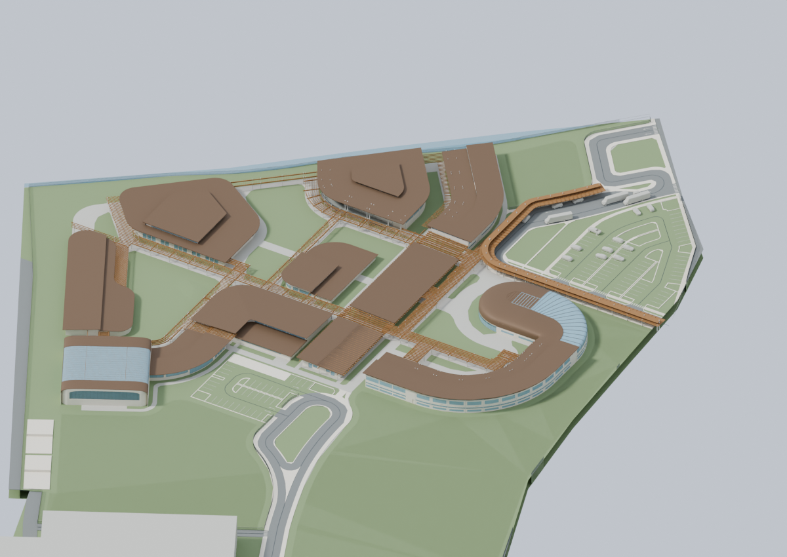
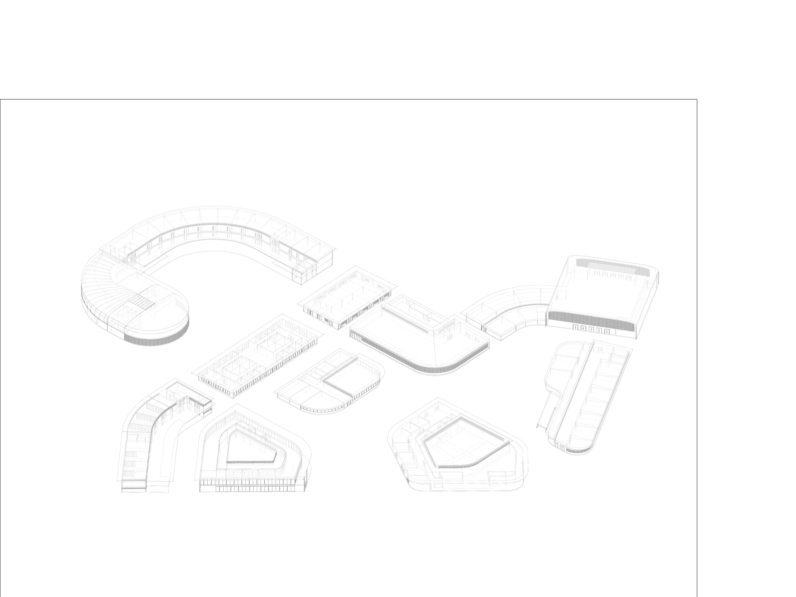

A familiar place, reconsidered
The proposal is for Henry S. West Laboratory School in Coral Gables, Florida—the school Brandon attended as a child. It studies the campus as a collection of connected learning environments.
Learning across a connected campus.
A K–12 school proposal with separate learning buildings connected by paths, ramps, and shared courtyards.

A K–12 school proposal with separate learning buildings connected by paths, ramps, and shared courtyards.
[Add the central design question, site response, spatial intentions, and the decisions that shaped the proposal.]
The proposal is for Henry S. West Laboratory School in Coral Gables, Florida—the school Brandon attended as a child. It studies the campus as a collection of connected learning environments.
Distinct program colors help explain the relationship between buildings. Shared paths, courtyards, and ramps connect the ground and upper levels, supporting a reading of the school as a continuous spatial network.
Net-zero is the proposal’s design ambition, rather than a claim of measured performance. The interactive study makes the building arrangement and circulation available for exploration; its real-time materials are interpretations of the supplied geometry and references.

Site photographs and reference views that inform the project setting.